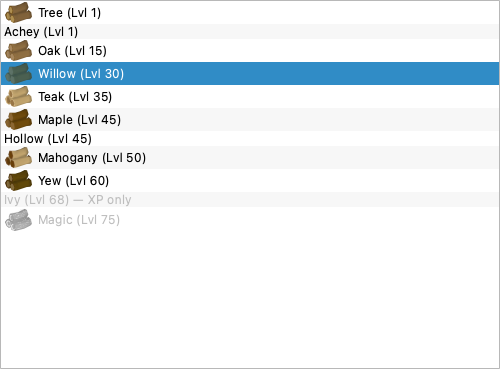

Built on the finished backend (stable target IDs, hatchet resolution, bird-nest tables, save migration). The frontend now shows friendly names, real lock reasons, output/XP/hatchet tooltips, the XP-only Ivy, and bird-nest opening as a first-class no-XP activity.

The list iterated TREE_DATA whose keys are now stable IDs, so it would have shown "oak"/"tree". Rows now render display_name + level; the ID is stored on the item and persisted via on_set_tree.
Locks now run through can_chop_woodcutting_target_pure and separate level from no usable hatchet (resolved from the bound toolbelt + owned items), shown in the tooltip.
Ivy is marked inline "— XP only / produces no logs". Open bird nests is a visible no-XP Utility row (batch of 28), locked until you hold a nest.
The unwired show_stats / show_tree_selection_dialog still subscripted TREE_IMAGES[id] and filtered item in TREE_DATA — both broken by the ID switch. Now use real log-item names + safe image lookups.
tools/fetch_assets.py → tools/trim_icons.py, with provenance) is the remaining plan todo and wants a network pass of its own — say the word and I'll run it.